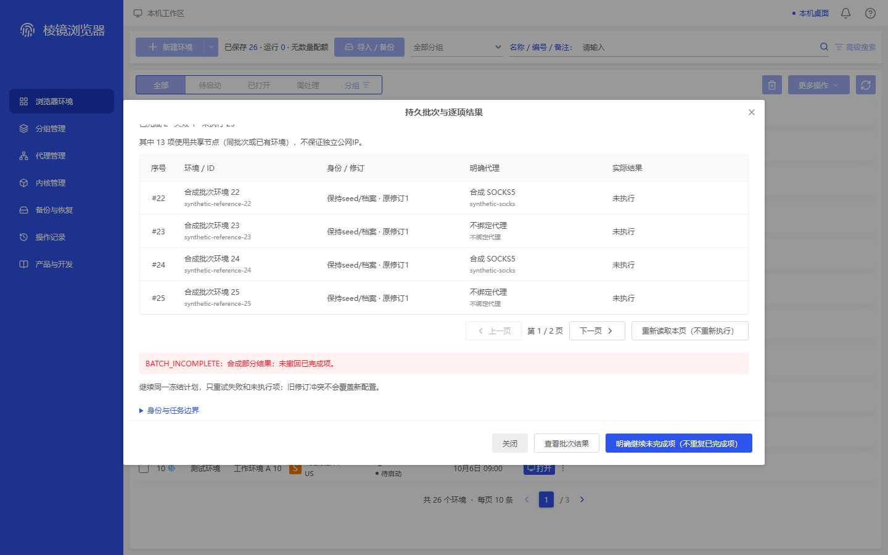
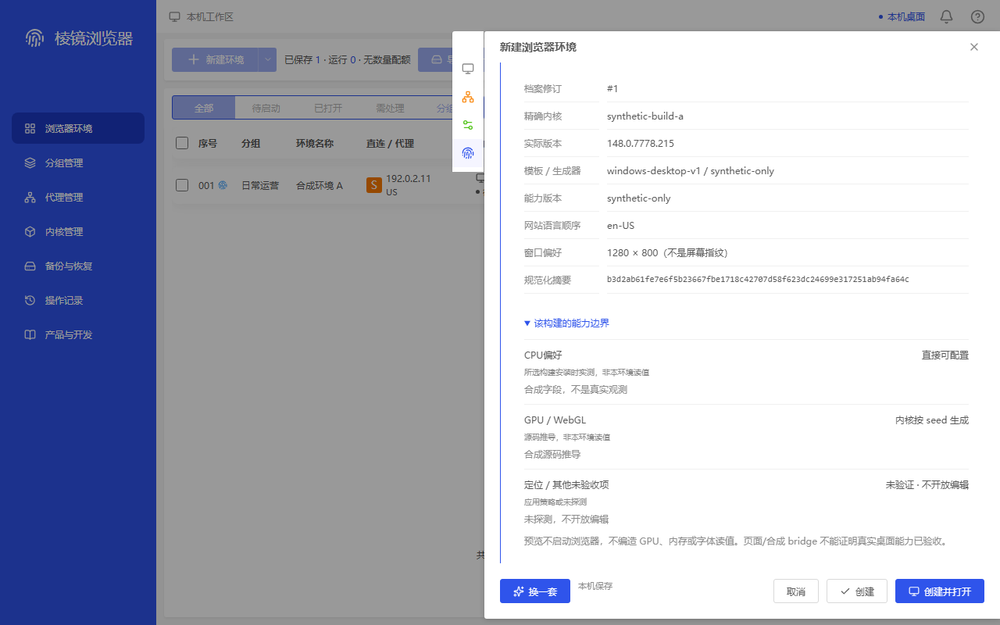
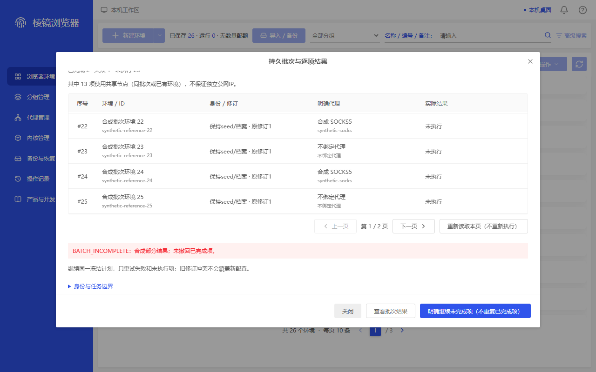

新补证仅覆盖所列合成状态。ADAPTED为明确适配，MAPPED为同类容器，MISSING为缺直接原参考，FAIL保留可见问题。动作、图片、整项与真实桌面分别记账；旧来源、旧失败、原274/47定义和正式4/21不回写。
env-frontier-f07-native-idle-create-bottom · 1440×900
ADAPTED — Actual pixels show the expanded native technical table, not an expanded-history or locked-create substitute.,Final location/other-unverified capability row, unverified/not-editable text, and final preview/native-capability caveat are readable above the footer.,synthetic-build-a and actual-version text are readable; no kernel dropdown or second overlay obscures the body.,All four footer buttons are wholly visible: 换一套, 取消, 创建, 创建并打开.,Opened original preserves the corresponding right drawer/rail/header/footer container but contains editable commercial settings, not a direct native read-only technical-tail reference.
映射原容器 environment-create-bottom；不代表已找到同名业务原状态。
a51c69d7406795ec39ffbe0f1bf5111395c1f2c614ec58cf0088da01e28b3aed
env-frontier-b08-native-dense-bottom · 1440×900
MAPPED — Actual pixels show rows #22 through #25 at the table bottom; the total 25-row qualification comes from the capture manifest, not a claim that every row is simultaneously pictured.,Row #25 is complete across all five cells, including the full synthetic-reference-25 ID/name, identity/revision, explicit proxy and result; no last-cell/footer clipping.,第 1 / 2 页 pager, reread control and all three fixed-footer controls are readable together.,The upper summary is partly outside the scrolled body's top edge and is not certified readable; this is not a full-body/no-clipping verdict.,Opened original is a centered binding-dialog/table/pagination container, not direct reference or execution evidence for this native dense batch/result workflow.
映射原容器 proxy-bound；不代表已找到同名业务原状态。

c64b3366d1af020fdf5939472443b7cdaa0845734baf453f5d85fc6f12e661dd
env-frontier-f07-native-idle-create-bottom · 1280×800
ADAPTED — The technical heading and earlier content have scrolled above the body, while revision, exact build and actual-version rows remain readable.,The final location/other-unverified row and its complete caveat remain above, not behind, the fixed footer; no clipped kernel text or occluding overlay.,All four footer buttons fit; the four visible rail icons do not mean all four continuous form sections are simultaneously visible.,Opened original has the corresponding right drawer/container at this viewport, but commercial editable settings and footer actions differ from the native technical-capability adaptation.
映射原容器 environment-create-bottom；不代表已找到同名业务原状态。

204d1e71997b049fc2ee7d9a09d01af20d58491b0bf4b9d96e2cc57790a71a4b
env-frontier-b08-native-dense-bottom · 1280×800
MAPPED — Actual pixels show the table's #22-#25 tail; complete row #25 has its full synthetic-reference-25 ID/name without ellipsis or bottom-edge clipping.,All five last-row cells end before the visible first-page pager; partial-result warning, continuation caveat and all three fixed-footer controls are readable together.,The upper summary is partly outside the scrolled body and is not certified readable; no global full-body/no-clipping claim.,Opened original is the corresponding centered binding-dialog container; a direct native batch/dense-bottom business-state reference remains missing.
映射原容器 proxy-bound；不代表已找到同名业务原状态。

70449ab2661e9770d112a7314d472067e92759c3f82ca232e0d15425a6164eb3